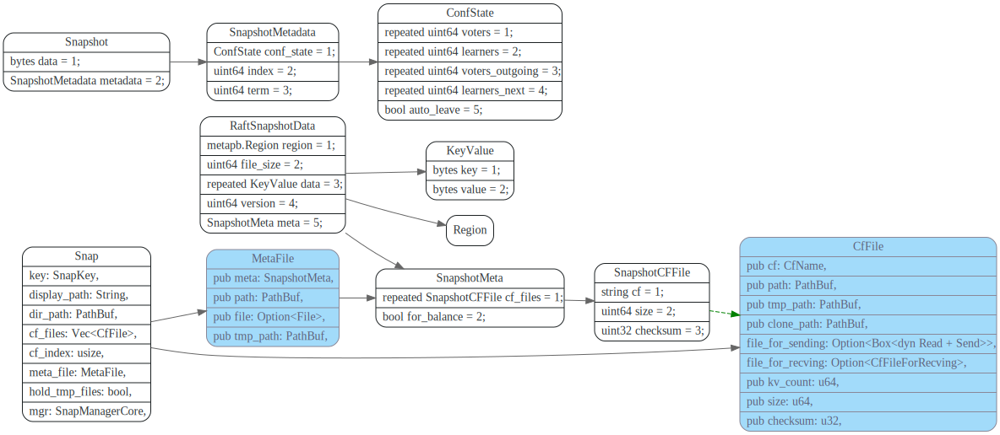
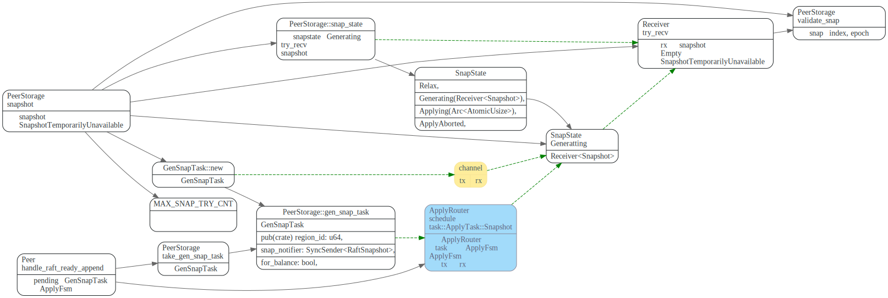
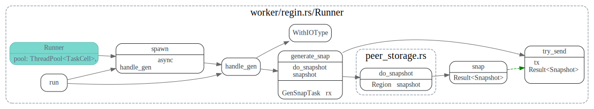
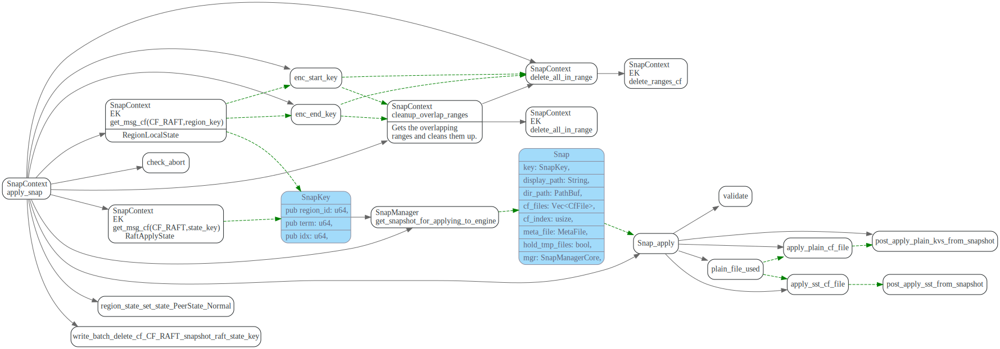

PeerStorage
Trait Storage
#![allow(unused_variables)] fn main() { /// Storage saves all the information about the current Raft implementation, including Raft Log, /// commit index, the leader to vote for, etc. /// /// If any Storage method returns an error, the raft instance will /// become inoperable and refuse to participate in elections; the /// application is responsible for cleanup and recovery in this case. pub trait Storage { /// `initial_state` is called when Raft is initialized. This interface will return a `RaftState` /// which contains `HardState` and `ConfState`. /// /// `RaftState` could be initialized or not. If it's initialized it means the `Storage` is /// created with a configuration, and its last index and term should be greater than 0. fn initial_state(&self) -> Result<RaftState>; /// Returns a slice of log entries in the range `[low, high)`. /// max_size limits the total size of the log entries returned if not `None`, however /// the slice of entries returned will always have length at least 1 if entries are /// found in the range. /// /// # Panics /// /// Panics if `high` is higher than `Storage::last_index(&self) + 1`. fn entries(&self, low: u64, high: u64, max_size: impl Into<Option<u64>>) -> Result<Vec<Entry>>; /// Returns the term of entry idx, which must be in the range /// [first_index()-1, last_index()]. The term of the entry before /// first_index is retained for matching purpose even though the /// rest of that entry may not be available. fn term(&self, idx: u64) -> Result<u64>; /// Returns the index of the first log entry that is possible available via entries, which will /// always equal to `truncated index` plus 1. /// /// New created (but not initialized) `Storage` can be considered as truncated at 0 so that 1 /// will be returned in this case. fn first_index(&self) -> Result<u64>; /// The index of the last entry replicated in the `Storage`. fn last_index(&self) -> Result<u64>; /// Returns the most recent snapshot. /// /// If snapshot is temporarily unavailable, it should return SnapshotTemporarilyUnavailable, /// so raft state machine could know that Storage needs some time to prepare /// snapshot and call snapshot later. /// A snapshot's index must not less than the `request_index`. fn snapshot(&self, request_index: u64) -> Result<Snapshot>; } }
log entries
接口first_index, last_index, initial_state和
Region, RaftLocalState, RaftApplyState之间的关系如下图:

entries 和term
entries和term接口实现逻辑如下图所示，主要是调用
RaftEngine的fetch_entries_to 获取[low,high)
范围内的log entries.
如果RaftEngine没有builtin_entry_cache, 则中间加一层EntryCache
在PeerStorageappend raft log entry时，会同时append 到EntryCach
和raft write batch中,而 write batch最终会写到raft engine。

raft snapshot
raft snapshot相关proto 如下，其中Snapshot是leader 发送给 follower的snapshot数据结构。 SnapshotMetadata则包含了confState 以及当前的index和term。

生成 snapshot
snapshot 生成流程如下:
- PeerStorage::snapshot函数生成GenSnapTask, 然后
Peer::handle_raft_ready_append将task发送给ApplyFsm - ApplyFsm将GenSnapTask转为
RegionTask::Gen, 发送给snap-generator worker线程。 - snap-generator worker 线程调用
peer_storage::do_snapshot生成snapshot, 然后 使用notifier(对应GenSnapTask rx的tx),通知GenSnapTask已OK。 - 下次PeerStorage::snapshot被调用时，会从GenSnapTask::Receiver中
try_recvsnapshot, 如果未准备好会返回SnapshotTemporarilyUnavailable，后面会再重试。
GenSnapTask

ApplyFsm::handle_snapshot
ApplyFsm::handle_snapshot, 此处主要处理need_sync的状况，
将write batch数据和apply sate flush写入rocksdb后，
再获取rocksdb 的snapshot. 最包装成RegionTask::Gen
由snap-generator worker线程池来执行。

snap-generator线程池执行handle_gen
在worker/region 的snap-generator线程池中执行生成snapshot的任务,线程池大小为GENERATE_POOL_SIZE 2
该线程池还负责apply snapshot.

生成SnapshotMetadata: peer_storage::do_snapshot
do_snapshot负责生成SnapshotMetadata, 而store/snap.rs中的build函数则负责生成snapshot的数据部分。

生成Snapshot 数据: Snap::build
将region的default, lock, write 几个column family 数据分别写入对应的cf_file
先写入到cf.tmp_file,写入成功后再rename.
#![allow(unused_variables)] fn main() { pub const SNAPSHOT_CFS_ENUM_PAIR: &[(CfNames, CfName)] = &[ (CfNames::default, CF_DEFAULT), (CfNames::lock, CF_LOCK), (CfNames::write, CF_WRITE), ]; pub const CF_DEFAULT: CfName = "default"; pub const CF_LOCK: CfName = "lock"; pub const CF_WRITE: CfName = "write"; }

send snapshot
recv snapshot
apply snapshot
schedule_applying_snapshot
PeerStorage在处理raft的ready中的snapshot时，先将 snapshot metadata一些信息放入InvokeContext，写入write batch，
在write batch写完磁盘后，在PeerStorage::post_ready中，
将snap_state 设置为SnapState::Applying, 然后发送RegionTask::Apply给
snap generator worker线程池。

snap generator 线程池执行handle_apply
